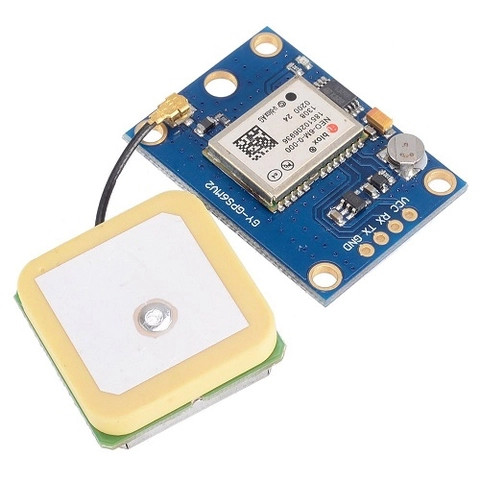
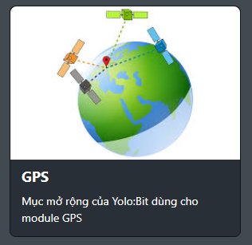

24. Mạch định vị GPS NEO - 6M V2
{kind=link}
Mạch Định Vị GPS NEO-6M V2 là một module GPS hoàn chỉnh dựa trên GPS Ublox NEO 6M. Thiết bị này sử dụng công nghệ mới nhất của Ublox để cung cấp thông tin định vị tốt nhất có thể và bao gồm một ăng-ten GPS chủ động 12 x 12mm tích hợp lớn hơn với chân cắm UART TTL.
Module GPS Ublox có đầu ra TTL nối tiếp, nó có bốn chân: TX, RX, VCC và GND, đồng thời có đèn LED hiển thị trạng thái để dễ dàng quan sát trong quá trình sử dụng.
1. Mua sản phẩm

2. Thông số kỹ thuật
Thông số kỹ thuật
Nguồn cung cấp: 3.3V
Module có ăng-ten bằng sứ, thu phát tín hiệu mạnh
Có EEPROM lưu tham số cấu hình khi mất nguồn
Có pin dự phòng lưu dữ liệu
Có đèn LED hiển thị tín hiệu
Kích thước ăng-ten: 12x12 mm
Kích thước module: 23x30 mm
Tốc độ baud mặc định: 9600
Pinout của module
Module GPS có 4 chân, và mỗi chân có chức năng như sau:
STT |
Chân |
Chức năng |
|---|---|---|
1 |
GND |
Nối đất |
2 |
VCC |
Cấp nguồn (3.3V) |
3 |
RX |
Đầu nhận tín hiệu |
4 |
TX |
Đầu gửi tín hiệu |
3. Kết nối
Bước 1: Chuẩn bị các thiết bị như sau:

|

|
|
|---|---|---|
Máy tính lập trình Yolo:Bit |
Mạch mở rộng cho Yolo:Bit |
Module GPS |
Bước 2: Cắm Yolo:Bit vào mạch mở rộng
Bước 3: Kết nối dây tín hiệu với module và mạch mở rộng như hình:
{kind=link}
Module GPS sẽ kết nối với mạch Yolo:Bit ở hàng chân cắm theo mẫu. Dây màu đỏ tương ứng với dây nguồn dương (VCC), dây màu đen tương ứng nguồn âm (GND). Dây tín hiệu Tx và Rx sẽ quy định trong phần lập trình.
4. Lập trình module GPS với Yolo:Bit
Để lập trình module GPS, chúng ta phải cần thêm thư viện mở rộng GPS, bạn hãy copy đường dẫn sau: https://github.com/AITT-VN/yolobit_extension_gps.git và dán vào mục mở rộng để tải thư viện mở rộng.
Xem hướng dẫn tải thư viện tại đây.
{kind=link}
Chương trình cơ bản để lấy tín hiệu từ GPS:
Đầu tiên chúng ta sẽ khởi tạo module GPS từ chân P10 và P13
{kind=link}
Sau khi khởi tạo, chúng ta sẽ cập nhật thông tin GPS bằng khối lệnh :
{kind=link}
Các thông tin chúng ta được GPS hỗ trợ sẽ bao gồm các thông tin như sau :
{kind=link}
Chương trình đơn giản để kiểm tra thời gian lấy được từ GPS khi ấn nút A sẽ như sau:
{kind=link}
5.Dự án mẫu
Dự án gửi vị trí cần cứu hộ đến trạm thông tin cứu hộ:
Với mạch Yolo:bit , chúng ta có thể kết nối với wifi và gửi tín hiệu lên server, kết hợp cùng module GPS chúng ta sẽ lấy vị trí tương đối chính xác để báo hiệu vị trí cần trợ giúp đến trạm thông tin.
Đầu tiên chúng ta cần kết nối wifi cho thiết bị và kết nối với server bằng lệnh:
{kind=link}
Sau đó chúng ta sẽ khởi tạo module GPS ở chân P10 và P13 và sẽ cho cập nhật thông tin từ GPS sau mỗi 1 giây ở vòng lặp mãi :
{kind=link}
Khi cần ứng cứu , chúng ta sẽ dùng nút A để gửi vị trí của mình bao gồm kinh độ và vĩ độ lên trên kênh dữ liệu V1 và V2 trên server:
{kind=link}
Ở trạm điều khiển cứu nạn, chúng ta sẽ nhận được dữ liệu vĩ độ ở kênh V1 và kinh độ ở kênh V2, từ đó có thể tìm ra được vị trí cần để hỗ trợ kịp thời.